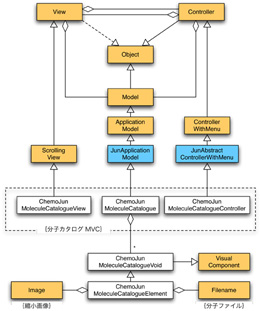
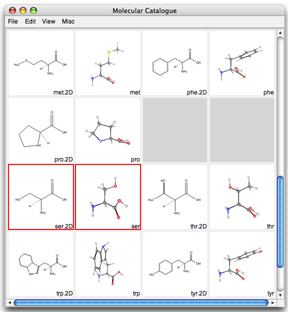

分子カタログのMVC（ChemoJunMoleculeCatalogue, ChemoJunMoleculeCatalogueView, ChemoJunMoleculeCatalogueController）は、じゅんのアプリケーションモデル(JunApplicationModel）、2次元のスクロールを司るビュー（ScrollingView）、右ボタンメニューを操るコントローラ（JunAbstractControllerWithMenu）を継承して構成されています。
|  |  |
| 分子カタログの構造 |
モデルである分子カタログは、複数のカタログエレメント（ChemoJunCatalogueElement）ないしは無効な空エレメント（ChemoJunCatalogueVoid）を抱えて、一覧を描き出します。ひとつのカタログエレメントは、縮小画像であるイメージと分子ファイル（モルファイル）を保持しています。縮小画像の上でダブルクリックされると、対応する分子ファイルをたどり、分子ビューアを開きにゆくわけです。